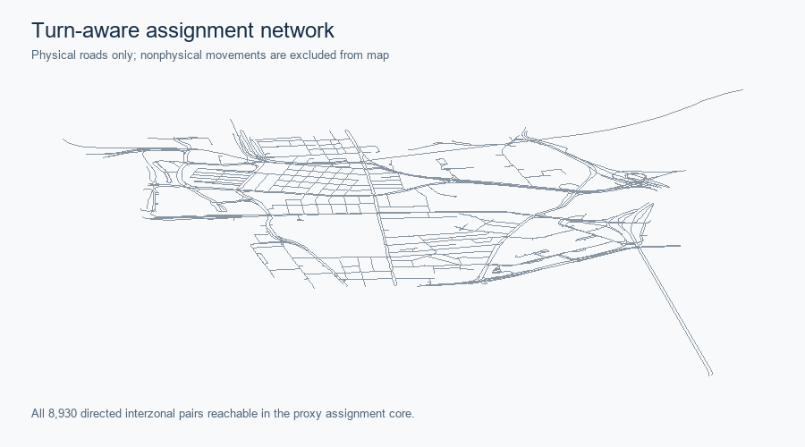
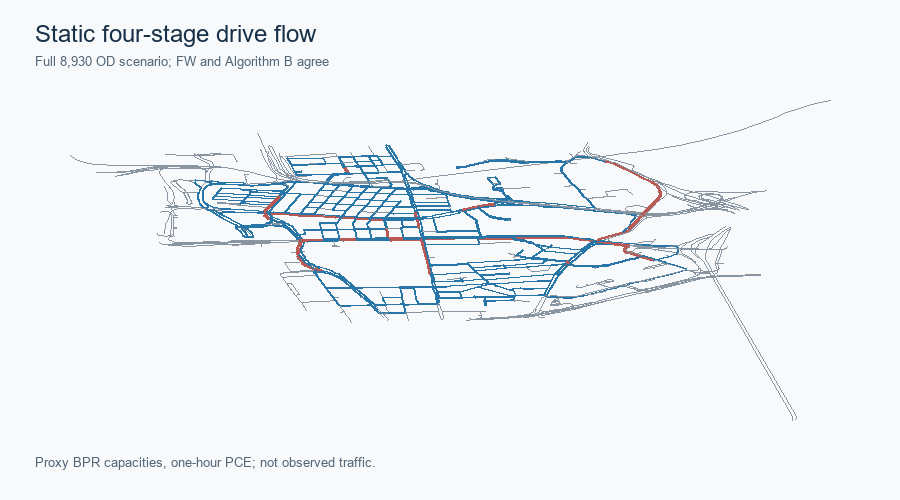
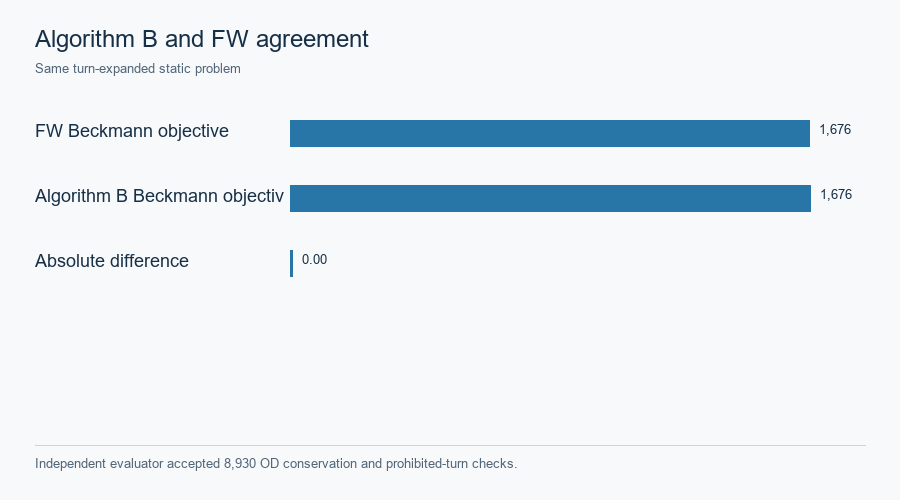

Hong Kong · static Frank–Wolfe and Algorithm B
The accepted assignment-ready graph retains 1,239 directed physical links, source turn restrictions and grade-separation quarantine. All 95 zones reach the selected strongly connected core, but straight zone-access proxies remain unverified for barriers and water. Posted speed limits have an official source; conversion to free speed, lane count and BPR capacity are engineering transfers, not observed link attributes. Phase A gate · Turn routing contract.

All 8,930 directed interzonal pairs are reachable in the proxy core. SVG · Source record.

Static FW and official spartalab/tap-b Algorithm B were evaluated on identical turn-expanded links and 8,930 positive OD pairs. Hong Kong uses an accepted task-local lossless TAPLab-compatible adapter, not official TAPLab registered-adapter parity. The independent evaluator reports Beckmann objective 1,676.01213133 for both methods, maximum physical-flow difference below 1e-12 PCE, zero prohibited turns and zero OD imbalance. The modeled load is 723.191227885 PCE in one hour. Saved comparison · TAPLab/tap-b distinctions.

Modeled PCE under proxy BPR capacity, not a measured count map. SVG · Source record.


The saved independent check covers OD conservation and prohibited turns. SVG · Source record.

This static BPR/Beckmann objective must not be numerically compared with the later fixed-cost, hard-capacity finite space–time objective. Neither static result is a validated traffic forecast. Case landing.